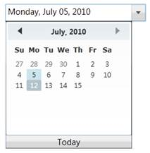

DateTimeEdit control allows you to set the start and end dates by using the MinDateTime and MaxDateTime properties. The Calendar also displays only the dates between the MinDateTime and MaxDateTime.
When the MinDateTime is set, if the new MinDateTime property value is greater than the MaxDateTime property value, then the MaxDateTime is set equal to the MinDateTime. If the DateTime (DateTime property) is less than the new MinDateTime, then the DateTime property is also set equal to the MinDateTime.
When the MaxDateTime is set, if the MinDateTime property is greater than the new MaxDateTime property, then the MinDateTime property value is set equal to the MaxDateTime. If the current DateTime (DateTime property) is greater than the new MaxDateTime, then the DateTime property is set equal to the MaxDateTime.
|
XAML |
|
<syncfusion:DateTimeEdit x:Name="dateTimeEdit" Height="25" Width="200" DateTime="07/05/2010" Pattern="LongDate" MinDateTime="01/01/2010" MaxDateTime="07/15/2010"/> |
|
C# |
|
Syncfusion.Windows.Shared.DateTimeEdit dateTimeEdit = new Syncfusion.Windows.Shared.DateTimeEdit(); dateTimeEdit.Width = 200; dateTimeEdit.Height = 25; dateTimeEdit.DateTime = new DateTime(2010, 07, 05); dateTimeEdit.MinDateTime = new DateTime(2010, 01, 01); dateTimeEdit.MaxDateTime = new DateTime(2010, 07, 15); dateTimeEdit.Pattern = DateTimePattern.LongDate; this.LayoutRoot.Children.Add(dateTimeEdit); |

Figure 284: DateTimeEdit
This Calendar also displays the range of dates between the MinDateTime and MaxDateTime.